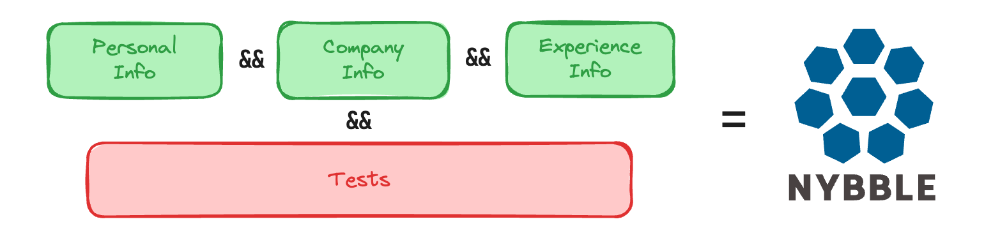

Processus d'inscription Nybble

Rassembler la meilleure communauté Blue Team nécessite un bon processus d’inscription.
Notre processus comprend plusieurs étapes, conçues pour garantir la clarté pour toutes les personnes impliquées, la qualité des membres de la communauté et le respect des lois internationales.
Côté administratif
Travailler avec des indépendants ou des entreprises nécessite quelques vérifications et informations :
- Informations personnelles : nécessaires à la vérification de votre identité, dans le cadre de la démarche KYB (Know Your Business). Aucun travail n'est possible sans identité vérifiée
- Informations sur l'entreprise : nécessaires pour établir des factures et identifier les entreprises avec lesquelles Nybble est impliquée
- Informations sur l'expérience : en savoir plus sur vos compétences professionnelles. Il sera combiné à des tests pour déterminer si vous pouvez devenir membre de la communauté.
Sans toutes ces informations, vous ne pouvez pas finaliser l'inscription ni obtenir votre compte Nybble.
Tests : Dojo
Chez Nybble, nous faisons plus confiance aux tests qu'aux références. C'est pourquoi nous avons conçu la plateforme Dojo.
Quelques règles et conseils :
- Vous pouvez réaliser un ou plusieurs tests (au moins un test est requis pour devenir Nybbler)
- Chaque test vous fournit le profil correspondant (nommé "licence") dans le Nybble Hub.
- Vous pouvez revenir faire un autre test (pour récupérer une nouvelle licence) après votre inscription : en cas de succès, votre profil Nybble Hub sera mis à jour
- Chaque tentative de test est revue par l'équipe Nybble et peut se terminer de 3 manières :
- Validé (hourra)
- Échec et une nouvelle tentative est effectuée sans délai
- Échec, avec du délai. Généralement donné lorsqu'un peu de pratique est nécessaire avant de réessayer
2 tests sont disponibles dans le Dojo :
- Devenez analyste : un tri d'alertes en situation réelle. Nous vérifierons vos réponses et commentaires.
- Devenez Hunter : une campagne fictive avec des menaces à retrouver et à signaler.
Allons-y! Comment ça fonctionne?
- Accédez à https://hub.nybble-security.io/ et sélectionnez « Devenez un Nybbler »
- Remplissez le formulaire qui vous créera un compte pour le hub et le dojo.
- Vous n'avez accès qu'au menu pour l'inscription, en commençant par le côté administratif
- Après avoir effectué la partie administrative et au moins un test, vous aurez accès à la dernière étape : le récapitulatif de votre inscription. À partir de cet écran, vous pouvez tout vérifier, soumettre votre inscription et Nybble effectuera les vérifications finales.
- Si c'est validé, vous avez accès aux autres menus du Hub !